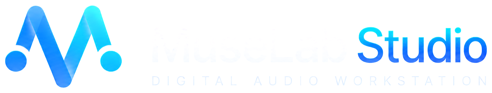
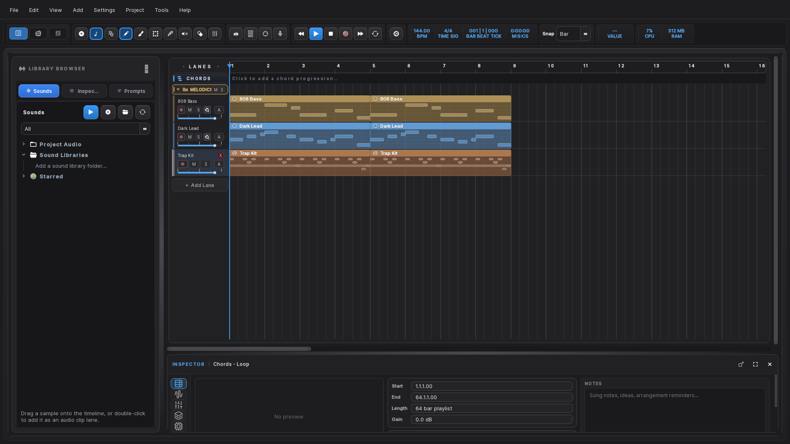
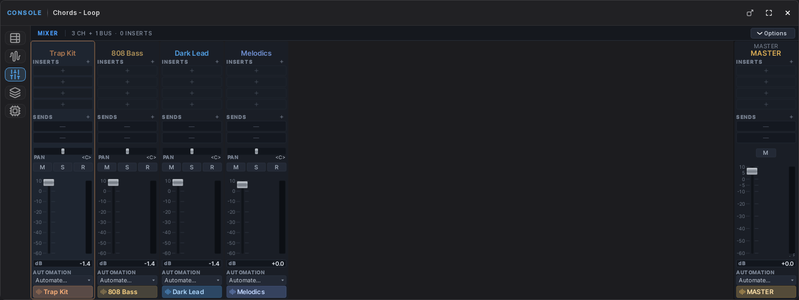
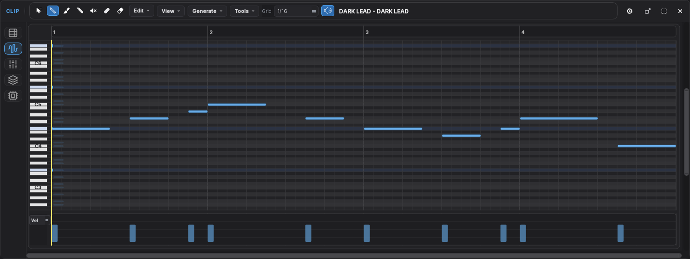
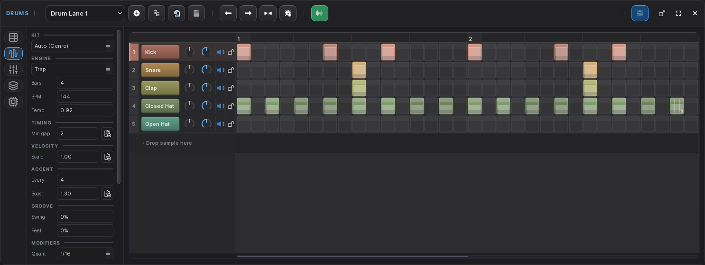
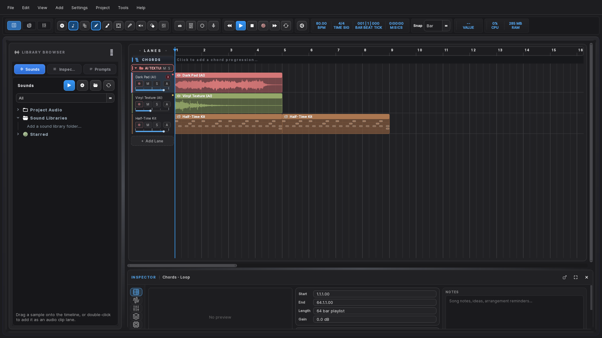

A complete music production studio for Windows. Arrangement, mixing, plugins, and AI that runs on your own machine.
Free to use · No account · No subscription · Nothing leaves your computer
Windows 10 / 11 · 64-bit · version 0.1.0

Write, record, arrange, mix and export in one place. Every feature below ships in the download — there is no paid tier and nothing is held back.
Unlimited lanes, clip editing, time-stretching, warp markers, comping and a tempo track that follows your song rather than fighting it.
Inserts, sends, group buses, pan, automation and a master chain. Folder faders are real signal routing, so riding a group never touches the balance inside it.
VST3 and LV2 instruments and effects, hosted out of process — a plugin that crashes takes itself down, not your session.
Text-to-audio, stem separation, audio-to-MIDI, drum generation and an assistant. All of it runs on your machine. No API key, no upload, no account.
Multi-track audio and MIDI capture with count-in, punch-in, loop recording and takes you can comp afterwards.
EQ, compression, multiband, saturation, reverb, delay and a limiter built in, so a rough mix can be finished without leaving the app.
Every lane gets a full channel strip. Group related tracks into a folder and it gains its own fader automatically.

A full editor with the tools you reach for constantly, and none of the ceremony.

Programme patterns quickly, then make them feel human rather than typed in.

The models ship inside the download and run locally. Nothing is uploaded, and it all works with the network off.

The AI models ship inside the installer, which makes it too large for a single download. It is split into parts — you do not need any tool to join them.
From the latest release. Put every one of them in the same folder.
| File | Size |
|---|---|
MuseLabStudio-0.1.0.0-Setup.exe | 3 MB |
MuseLabStudio-0.1.0.0-Setup-1.bin | 1.4 GB |
MuseLabStudio-0.1.0.0-Setup-2.bin | 1.4 GB |
MuseLabStudio-0.1.0.0-Setup-3.bin | 45 MB |
It finds the other parts by itself. Nothing to unzip, nothing to join.
Choose More info → Run anyway. It appears because the installer is not code-signed yet, not because anything is wrong with the file.
Everything is installed. There is nothing further to download and no account to make.
Do these four things first and everything afterwards behaves the way you expect.
Settings → Audio. If you have an audio interface, choose its own ASIO driver rather than a generic one. That single choice is the difference between comfortable latency and fighting the app all session.
Point the scanner at your VST3 folder — usually
C:\Program Files\Common Files\VST3. Scanning runs out of process, so a plugin
that misbehaves cannot take the app with it.
The release includes two, with the audio and MIDI they produced. Unzip one into your
projects folder and open it to see how a finished arrangement is put together.
Add a drum lane, programme a pattern, add a MIDI lane for bass. Group them into a folder and you get a fader for the whole group without touching what is inside it.
Yes. No trial, no locked features, no subscription and no account. Music you make with it is entirely yours — no royalty and no credit required.
No. Every AI feature runs on your machine using models that ship in the download. There is no API key and no telemetry. Turn off your network and it all still works.
The AI models are roughly 2.4 GB of it. They are included so the features work immediately and offline, rather than making you wait for a download the first time you try them.
The installer is not code-signed yet — a certificate is an annual cost. SmartScreen warns about any unsigned installer regardless of what it contains. Choose More info → Run anyway.
VST3 and LV2 instruments and effects are supported. VST2 is not — that SDK was withdrawn in 2018 and can no longer be licensed, so VST2 plugins are filtered out rather than failing mysteriously.
Not currently. Windows 10 and 11, 64-bit only.
Not at this time. The app is free to use but closed source.
Open an issue with what you did, what you expected, what happened, your Windows version and audio device, and the log from Help → Open Log Folder. Specific reports get fixed.
There is no paid tier planned and nothing is held back. If it saves you time or ends up on something you are proud of, you can put something in the tip jar. Entirely optional, and nothing in the app changes either way.
A good bug report is worth just as much.
Free, offline, and everything included.
Version 0.1.0 · Windows 10 / 11 64-bit